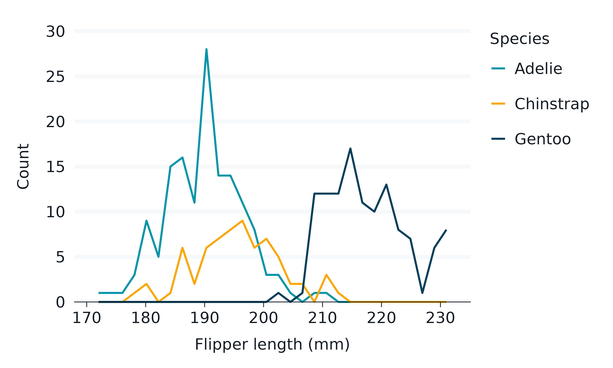
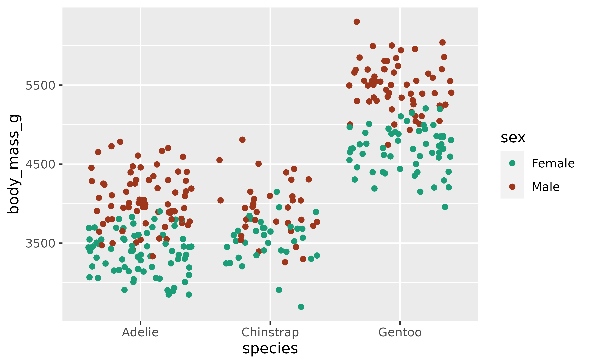
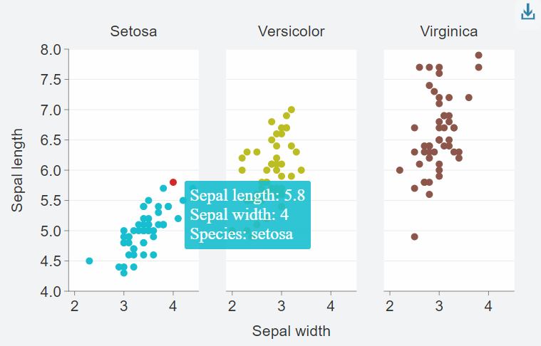
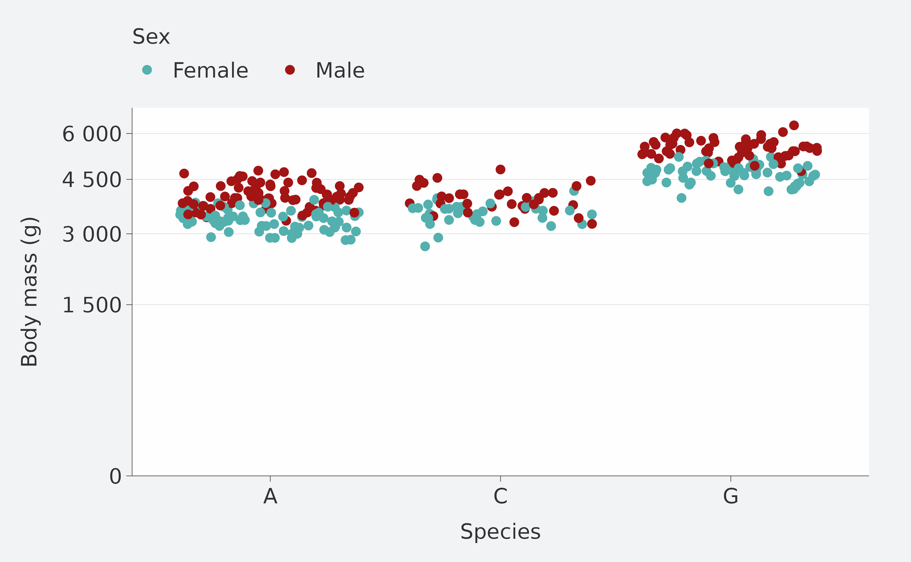
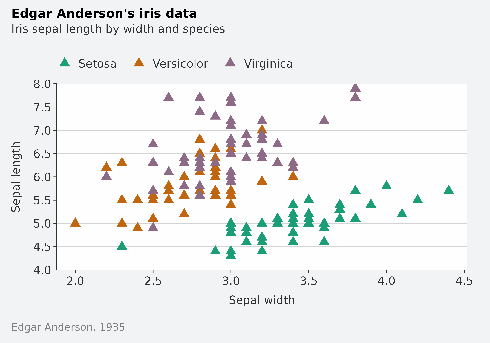
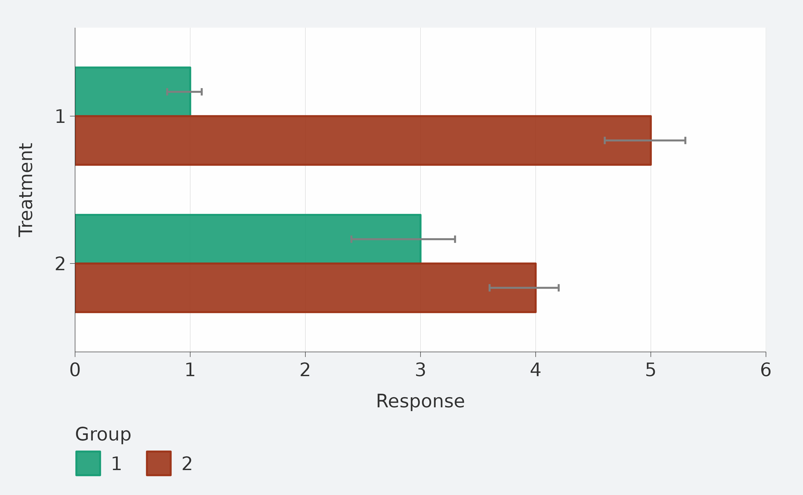

Overview
ggblanket is a package of wrapper functions around the fantastic ggplot2 package.
The primary objective is to simplify ggplot2 visualisation.
Secondary objectives relate to:
- Scope: cover the most useful 80% of what ggplot2 does
- Design: produce well-designed visualisation by default
- Alignment: use conventions generally aligned with ggplot2.
It is intended to be useful for all levels of experience from beginner to expert.
How it works
To simplify ggplot2 visualisation, the ggblanket package provides:
- Over thirty
gg_*wrapper functions to plot a single geom - A single
colargument to colour and fill by a variable - A
facetargument to facet by a variable - An additional
facet2argument to facet by a second variable - A
palargument to customise colours - Prefixed arguments to customise scales, guides, titles and faceting
- Default titles converted with
snakecase::to_sentence - Pretty default numeric limits
- Horizontal plots with y labels in order etc
- A
palthat generally inherits to subsequent geoms - Access to other
geom_*arguments via... - A
themeargument to customise the look and feel - A
gg_themefunction to create a quick theme - Compatibility with the
ggtextpackage to adjust titles etc with markdown - Compatibility with the
patchworkpackage to join plots together - Compatibility with the
ggiraphpackage to make interactive plots - A hack to use other non-supported aesthetics
- A base from which to create custom plot functions with your own defaults
- Ability to work with multiple geom layers, if care is taken
- Compatibility with many other non-supported geoms with
gg_blank
1. Over thirty gg_* wrapper functions to plot a single
geom
ggblanket supports the majority of geoms in ggplot2.
Each gg_*function wraps a ggplot2
ggplot(aes(...)) function with the applicable ggplot2
geom_*() function.
All aesthetics are within the ggplot function, and
therefore will inherit to any subsequent geom’s added by default.
Always pipe in your data, so that you can access variable names from the Rstudio autocomplete.
See the reference for the full list of functions available.
iris |>
mutate(Species = str_to_sentence(Species)) |>
gg_point(
x = Sepal.Width,
y = Sepal.Length,
col = Species)
2. A single col argument to colour and fill by a
variable
ggblanket merges the col and fill aesthetics of ggplot2 into one
concept represented by the col argument. In ggplot2
language, this argument always represents both colour and fill.
penguins |>
gg_histogram(
x = body_mass_g,
col = species) 
3. A facet argument to facet by a variable
Faceting is treated essentially as if it were an aesthetic, where users just provide an unquoted variable to facet by.
If a single facet (or facet2) variable is provided, it’ll default to
a “wrap” layout. But you can change this with a
facet_layout = "grid" argument.
penguins |>
tidyr::drop_na(sex) |>
mutate(sex = str_to_sentence(sex)) |>
gg_violin(
x = sex,
y = body_mass_g,
facet = species)
4. An additional facet2 argument to facet by a second
variable
A facet2 argument is also provided for extra
functionality and flexibility.
If both facetand facet2 variables are
provided, then it’ll default to a “grid” layout of facet by
facet2. But you can change this with a
facet_layout = "wrap" argument.
penguins |>
tidyr::drop_na(sex) |>
mutate(sex = str_to_sentence(sex)) |>
gg_density(
x = flipper_length_mm,
col = sex,
facet = species,
facet2 = island)
5. A pal argument to customise colours
The pal argument allows the users to pick the vector of
colours they want.
These arguments work in the same way regardless of whether a
col variable is specified or not.
penguins |>
mutate(sex = str_to_sentence(sex)) |>
group_by(species, sex) |>
summarise(body_mass_g = mean(body_mass_g, na.rm = TRUE)) |>
gg_col(
x = species,
y = body_mass_g,
col = sex,
position = position_dodge2(preserve = "single"),
pal = c("#1B9E77", "#9E361B"))
6. Prefixed arguments to customise scales, guides, titles and faceting
These prefixed arguments are designed to work with the Rstudio autocomplete to help you remember and find the adjustment you need.
Determine whether what you want to change relates to
x,y, col or facet,
and then type this prefix and press the tab key to access the list from
autocomplete. Then use arrow keys, and press tab again to select.
Available arguments are:
-
*_breaks: Adjust the breaks of a scale -
*_expand: Adjust the padding beyond the limits on a scale -
*_include: Include a value within a scale -
*_labels: Adjust the labels on the breaks of a scale -
*_limits: Adjust the limits on a scale -
*_trans: Transform a scale (e.g. “log10”, “sqrt” or “reverse”) -
*_title: Add a title -
*_sec_axis: Add a secondary x or y axis -
*_grid: Add or remove a x or y gridline -
col_continuousHow to colour a continuous variable (e.g. “steps”) -
col_rescale: Rescale a continuous col variable non-linearly -
col_legend_place: Place to put the legend (e.g. “r”) -
col_legend_ncol: Number of columns to arrange legend elements into -
col_legend_nrow: Number of rows to arrange legend elements into -
col_legend_rev: Whether to reverse the legend -
facet_layout: Whether the layout is to be “wrap” or “grid” -
facet_scales: How facet scales are to be treated -
facet_space: Whether facet space is to be allocated proportionally -
facet_ncol: How many columns to wrap facets into
-
facet_nrow: How many rows to wrap facets into -
clip: Whether to clip to the panel (“on”) or not (“off”)
penguins |>
gg_jitter(
x = species,
y = body_mass_g,
col = flipper_length_mm,
col_continuous = "steps",
y_include = 0,
y_trans = "sqrt",
y_breaks = scales::breaks_width(1500),
y_labels = scales::label_number())
7. Default titles converted with
snakecase::to_sentence
This will make quicker to get to a plot that has titles that are good
for external people to see, and will often work nicely for your
snakecase column names.
For titles that you need to change manually, you can change manually
using x_title, y_title, or
col_title.
To remove titles, you can use x_title = "" within the
gg_* function and equivalent for the y and
col titles.
penguins |>
group_by(species, sex) |>
summarise(
flipper_length_mm = round(mean(flipper_length_mm, na.rm = TRUE), 0)) |>
gg_tile(
x = sex,
y = species,
col = flipper_length_mm,
width = 0.9,
height = 0.9,
pal = rev(pals::brewer.rdbu(9)),
col_legend_place = "r",
col_rescale = c(186, 215, 222),
x_labels = snakecase::to_sentence_case,
title = "Average penguin body mass",
subtitle = "Palmer Archipelago, Antarctica",
theme = gg_theme(plot_background_pal = "white",
axis_line_pal = "white",
axis_ticks_pal = "white")) +
geom_text(aes(label = flipper_length_mm), col = "#232323", size = 3.5) 
8. Pretty default numeric limits
The default x and y scales have been designed to create symmetry.
If the y is numeric, the y limits will default to the
max of the y breaks with zero y expanding. It
will do similar with the x scale, if y is
character/factor/logical and x is numeric.
To revert to the min/max of the data, use
*_limits = c(NA, NA) or
*_limits = c(lubridate::NA_Date_, lubridate::NA_Date_).
storms |>
group_by(year) |>
filter(between(year, 1980, 2020)) |>
summarise(wind = mean(wind, na.rm = TRUE)) |>
gg_line(
x = year,
y = wind,
x_labels = scales::label_number(big.mark = ""),
y_include = 0,
title = "Storm wind speed",
subtitle = "USA average storm wind speed, 1980\u20132020",
y_title = "Wind speed (knots)",
caption = "Source: NOAA") +
geom_point()
9. Horizontal plots with y labels in order etc
When plots are horizontal, ggblanket ensures y labels
are in order.
The position of bars, pal, colours and legend elements
will generally be in the right order too.
penguins |>
tidyr::drop_na(sex) |>
group_by(species, sex, island) |>
summarise(body_mass_kg = mean(body_mass_g) / 1000) |>
gg_col(
x = body_mass_kg,
y = species,
col = sex,
facet = island,
width = 0.75,
col_labels = snakecase::to_sentence_case,
position = "dodge")
10. A pal that inherits to subsequent geoms
The pal is generally inherited to subsequent geom layers
regardless of whether there is a col argument.
It does this because ‘under the hood’, dummy col and
fill aesmthetic variables are added, and a colour scale is
then added with the legend turned off.
Note alpha does not inherit.
penguins |>
gg_boxplot(x = species,
y = body_mass_g,
width = 0.5,
pal = "#1B9E77",
outlier.colour = NA) +
geom_jitter()
11. Access to other geom_* arguments via
...
This relates to all other arguments other than the mapping argument with aesthetics.
All arguments and can be identified through the help on the relevant
ggplot2::geom_* function.
Common arguments to add are size, linewidth
and width.
Additionally, you can use the colour or
fill arguments to turn off part of the ggblanket col
aesthetic (e.g. colour = NA or fill = NA), or
fix it to single colour.
penguins |>
tidyr::drop_na(sex) |>
gg_smooth(
x = flipper_length_mm,
y = body_mass_g,
col = sex,
linewidth = 0.5, #accessed via geom_smooth
level = 0.99, #accessed via geom_smooth
col_legend_place = "t",
col_title = "",
col_labels = snakecase::to_sentence_case,
colour = "white") #accessed via geom_smooth
12. A theme argument to customise the look and
feel
This allows you to utilise the simplicity of ggblanket, while making content that has your required look and feel.
By using the theme argument, your theme will control all
theme aspects, but with some magic relating to the legend and gridline
removal within the gg_* function.
However, if you want your theme to adjust everything, then
just add your theme as a layer instead
(e.g. + theme_grey()).
penguins |>
mutate(sex = str_to_sentence(sex)) |>
gg_point(x = bill_depth_mm,
y = bill_length_mm,
col = sex,
facet = species,
pal = c("#1B9E77", "#9E361B"),
theme = theme_grey())
13. A gg_theme function to create a quick theme
The gg_theme function allows you to modify the default
theme by changing text size, colours, margins, among other.
It includes arguments for adjusting text, background colours, axis lines, ticks and gridlines.
There is also a void = TRUE argument that is useful for
maps.
storms |>
group_by(year) |>
filter(between(year, 1980, 2020)) |>
summarise(wind = mean(wind, na.rm = TRUE)) |>
gg_col(
x = year,
y = wind,
x_labels = scales::label_comma(big.mark = ""),
x_expand = c(0, 0),
theme = gg_theme(
text_size = 11,
plot_background_pal = "white",
panel_background_pal = "white"))
14. Compatibility with the ggtext package to adjust
titles etc with markdown
If you wish to have a markdown title, make sure the face is plain,
and then add the applicable theme layer with
element_markdown.
nc <- sf::st_read(system.file("shape/nc.shp", package = "sf"), quiet = TRUE)
nc |>
gg_sf(col = AREA,
col_legend_place = "b",
col_breaks = scales::breaks_width(0.1),
pal = pals::brewer.reds(9),
title = "**Bold** or _italics_ or <span style = 'color:red;'>red</span>",
theme = gg_theme(title_face = "plain")) +
theme(plot.title = ggtext::element_markdown())
15. Compatibility with the patchwork package to join
plots together
As ggblanket output objects are ggplot’s, it works fine with the patchwork package to join plots together.
p1 <- diamonds |>
gg_point(
x = carat,
y = price)
p2 <- diamonds |>
gg_bin2d(
x = carat,
y = price,
caption = "Source: Diamonds Association",
theme = gg_theme(caption_hjust = 1))
p1 + p2
16. Compatibility with the ggiraph package to make
interactive plots
By using the powerful gg_blank function, you can then
use then access the interactivity of ggiraph.
When using gg_blank, be sure to change the stat to that
which will be in your subsequent layer, so that the scales are built
appropriately.
ggblanket also provides a add_tooltip function to create
a column of variable names and values, which can then be used for the
tooltip. Note this approach only works where the
stat = identity.
df <- iris |>
tibble::tibble() |>
add_tooltip(Sepal.Width, Sepal.Length, Species)
df |>
head(1)
p <- iris |>
add_tooltip(tidyselect::contains("Sepal"), Species) |>
mutate(id = row_number()) |>
gg_blank(x = Sepal.Width,
y = Sepal.Length,
col = Species,
facet = Species,
theme = gg_theme("helvetica"),
facet_labels = snakecase::to_sentence_case) +
ggiraph::geom_point_interactive(aes(tooltip = tooltip, data_id = id))
ggiraph::girafe(
ggobj = p,
width_svg = 5,
height_svg = 3.25,
options = list(
ggiraph::opts_tooltip(use_fill = TRUE, use_stroke = TRUE),
ggiraph::opts_hover(css = "fill: #d62728; stroke: #d62728"))
)
17. A hack to use other non-supported aesthetics
gg_* functions do not directly support aesthetics of
alpha, size, linewidth,
shape, and linetype. However, you can use
gg_blank. The hack is to make your additional aesthetic
equivalent to the col aesthetic. If you do not want things
to be coloured by the aesthetic, you need to make the pal
the same colour for each of the values in the col
aesthetic. You will need to make the titles of the legend equivalent, so
that the legend can be merged into one. The examples below demonstrate
how this works for an alpha aesthetic.
p1 <- penguins |>
gg_blank(
x = flipper_length_mm,
y = body_mass_g,
col = species,
pal = rep(pal_viridis_mix(1), 3),
x_breaks = scales::breaks_pretty(3),
col_legend_ncol = 2) +
geom_point(aes(alpha = species)) +
labs(alpha = "Species") +
scale_alpha_manual(values = c(0.1, 1, 0.5))
p2 <- penguins |>
gg_blank(
x = flipper_length_mm,
y = body_mass_g,
col = species,
x_breaks = scales::breaks_pretty(3),
col_legend_ncol = 2) +
geom_point(aes(alpha = species)) +
labs(alpha = "Species") +
scale_alpha_manual(values = c(0.1, 1, 0.5))
p1 + p2
18. A base from which to create custom plot functions with your own defaults
You can easily create powerful custom functions. This is because the
... argument can allow you to access all arguments
within the ggblanket gg_* function (and applicable
ggplot2::geom_* function).
gg_point_custom <- function(data, x, y, col,
size = 3,
shape = 17,
pal = pals::brewer.dark2(9),
col_title = "",
col_legend_place = "t",
...) {
data |>
gg_point(x = {{ x }}, y = {{ y }}, col = {{col}},
size = size,
shape = shape,
pal = pal,
col_title = col_title,
col_legend_place = col_legend_place,
...)
}
iris |>
mutate(Species = str_to_sentence(Species)) |>
gg_point_custom(
x = Sepal.Width,
y = Sepal.Length,
col = Species,
title = "Edgar Anderson's iris data",
subtitle = "Iris sepal length by width and species",
caption = "Edgar Anderson, 1935")
19. Ability to work with multiple geom layers, if care is taken
For all plots with multiple geom’s, you will need to think
about if there is any desired drawing order you want, and if so choose
the gg_* function that permits this order.
For plots where some geoms have acol aesthetic and some
do not, you must choose a gg_* function that relates to one
of the layers with a col argument. Or, if this conflicts
with the desired drawing order, then choose gg_blank with
the col argument.
Once you know what gg_* function you are going to use,
then you might need to use the *_include argument to adjust
the x or y scale if it will not include all of the range needed by
subsequent layers.
If subsequent layers need to not require all of the
aesthetics from the gg_* function, use the
inherit.aes = FALSE argument in the geom_*
function.
df <- data.frame(
treatment = factor(c(1, 1, 2, 2)),
response = c(1, 5, 3, 4),
group = factor(c(1, 2, 1, 2)),
upper = c(1.1, 5.3, 3.3, 4.2),
lower = c(0.8, 4.6, 2.4, 3.6)
)
df %>%
gg_col(
x = response,
y = treatment,
col = group,
position = "dodge",
x_include = max(.$upper),
width = 0.66,
pal = c("#1B9E77", "#9E361B")) +
geom_errorbar(
aes(xmin = lower, xmax = upper, group = group),
col = "#7F7F7F",
position = position_dodge(width = 0.66),
width = 0.1)
20. Compatibility with many other non-supported geoms with
gg_blank
You may or may not be able to work with other non-supported geom’s by
using gg_blank, depending on what the stat is in the
function. If the stat is “identity” or another stat used by ggblanket,
it can work gg_blank and that stat referenced. For other
stat’s, it depends on the nature of the stat. If the stat is creating
something to do with the col aesthetic, then
gg_blank will not work.
iris |>
mutate(Species = stringr::str_to_sentence(Species)) |>
gg_blank(
x = Sepal.Width,
y = Sepal.Length,
col = Species,
facet = Species,
col_legend_place = "r",
col_labels = snakecase::to_sentence_case) +
ggdensity::geom_hdr(colour = NA) +
labs(alpha = "Probs") +
theme(legend.title = element_text(margin = margin(t = 5)))